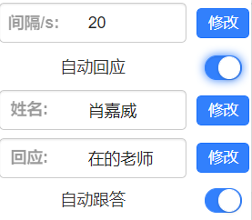

---雨课堂助手使用指南---
(修改设置后需要重新加载雨课堂页面)

雨课堂首页面刷新间隔，实际间隔为设置的加1.5s，默认间隔4min(用于检查是否有课,若有课自动进入课堂)。
功能：1老师点名时自动回复(点到你会有通知提示你) 2本节课结束后跳转到雨课堂首页监听下一节课。
姓名为你的名字或学号，用于检测是否点到你，默认不管点没点到你都会回复，建议修改此项。
设置点到你后自动回应的内容，默认回复在。
弹幕发什么就自动跟着发什么，冷却时间：30s。跟答条件：15s内有两条相同弹幕。
使用步骤：进入雨课堂首页后便可挂机干其他事🤗
注意：😕首次使用需要点击url地址处的锁,然后进入网站设置允许弹出式窗口和重定向权限,
或者在 设置→隐私设置和安全性→网站设置→弹出式窗口和重定向 中设置网站权限为允许。